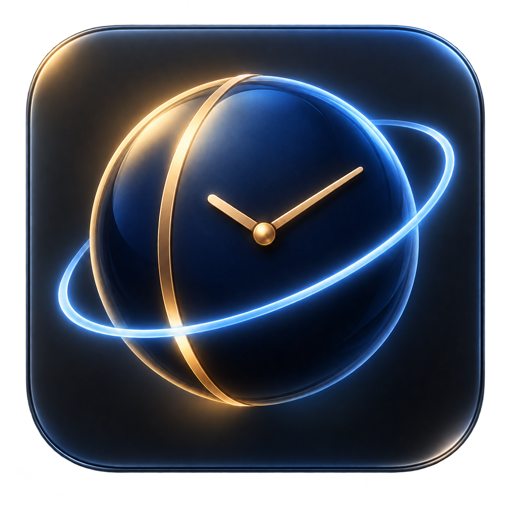
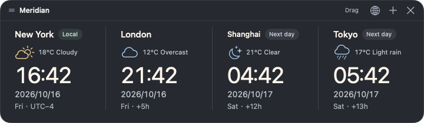
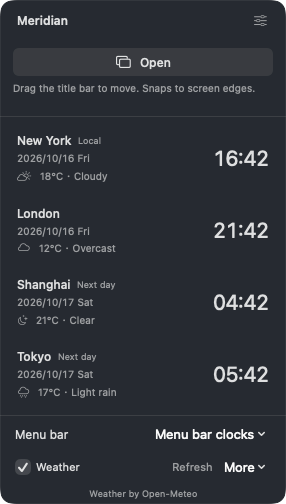
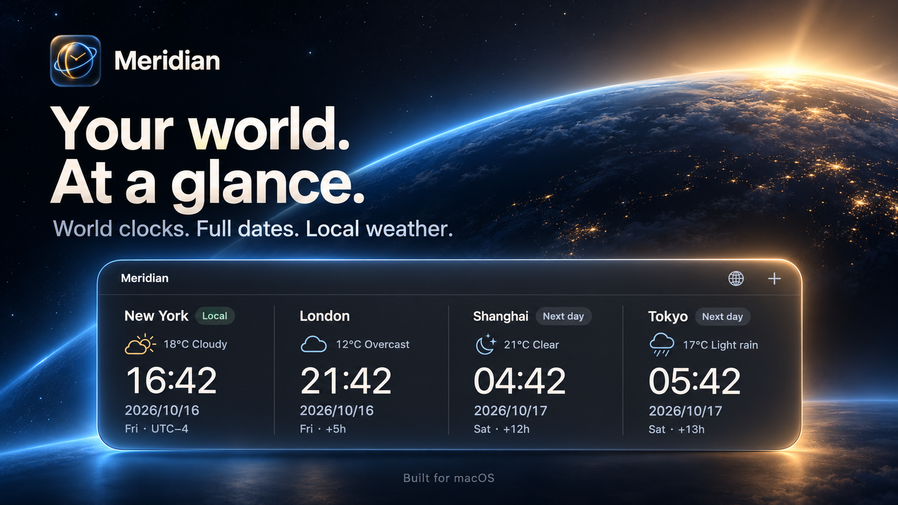

01 / THE WHOLE PICTURE
Never lose a day.
Every clock shows the full year, month and day. Next-day and previous-day labels make crossing time zones feel natural.

MeridianA QUIETER WAY TO KEEP TIME
World clocks, full dates and local weather.
A quiet companion for your Mac.
macOS 14+ · Apple Silicon & Intel · English & 简体中文

01 / THE WHOLE PICTURE
Every clock shows the full year, month and day. Next-day and previous-day labels make crossing time zones feel natural.
02 / YOUR OWN ARRANGEMENT
Browse 400+ time zones and representative cities worldwide. Search by city or country, then choose up to six clocks for your desktop and menu bar.
03 / A LITTLE MORE CONTEXT
Current city weather and Celsius temperatures sit alongside the time. Weather refreshes every 15 minutes.
MADE TO STAY OUT OF YOUR WAY
Keep a quiet horizontal strip on the desktop, or hide it and use the menu bar. Full dates and times stay close, with all your regions one click away.
Drag the title bar to move it; release near a screen edge to snap. Choose Open in the menu bar to bring it forward. Closing the widget sends it back to the menu bar.
Get to know Meridian

A FEW GOOD QUESTIONS
English is the default. Switch to Simplified Chinese in Settings without restarting the app.
No location permission is requested. Weather comes from Open-Meteo for each clock’s city. The local clock uses the city represented by your system time zone.
Sparkle powers automatic update checks and optional background downloads. Release archives are signed and verified before installation.
Your clocks keep running. Meridian labels unavailable or outdated weather clearly, and you can turn weather off at any time.
Meridian is available under PolyForm Noncommercial 1.0.0. Permitted noncommercial use, modification and redistribution are allowed under the license. Commercial use is not granted.